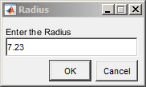
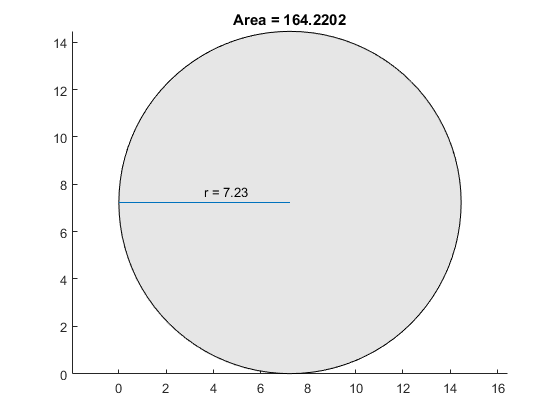

Using a Class to Display Graphics
Class Calculates Area
The CircleArea class shows the syntax of a typical class definition. This class stores a value for the radius of a circle and calculates the area of the circle when you request this information. CircleArea also implements methods to graph, display, and create objects of the class.
To use the CircleArea class, copy this code into a file named CircleArea.m and save this file in a folder that is on the MATLAB® path.
classdef CircleArea properties Radius end properties (Constant) P = pi end properties (Dependent) Area end methods function obj = CircleArea(r) if nargin > 0 obj.Radius = r; end end function val = get.Area(obj) val = obj.P*obj.Radius^2; end function obj = set.Radius(obj,val) if val < 0 error('Radius must be positive') end obj.Radius = val; end function plot(obj) r = obj.Radius; d = r*2; pos = [0 0 d d]; curv = [1 1]; rectangle('Position',pos,'Curvature',curv,... 'FaceColor',[.9 .9 .9]) line([0,r],[r,r]) text(r/2,r+.5,['r = ',num2str(r)]) title(['Area = ',num2str(obj.Area)]) axis equal end function disp(obj) rad = obj.Radius; disp(['Circle with radius: ',num2str(rad)]) end end methods (Static) function obj = createObj prompt = {'Enter the Radius'}; dlgTitle = 'Radius'; rad = inputdlg(prompt,dlgTitle); r = str2double(rad{:}); obj = CircleArea(r); end end end
Use the CircleArea Class
Create an object using the dialog box:
ca = CircleArea.createObj
Add a value for radius and click OK.

Query the area of the defined circle:
ca.Area
ans = 164.2202
Call the overloaded plot method:
plot(ca)

Description of Class Definition
Class definition code begins with the |
classdef CircleArea |
Define the |
properties
Radius
end |
Define the |
properties (Constant)
P = pi
end |
Define the |
properties (Dependent)
Area
end |
The |
methods
function obj = CircleArea(r)
if nargin > 0
obj.Radius = r;
else
obj.Radius = 0;
end
end |
Because the |
function val = get.Area(obj) val = obj.P*obj.Radius^2; end |
The |
function obj = set.Radius(obj,val) if val < 0 error('Radius must be positive') end obj.Radius = val; end |
The |
function plot(obj) r = obj.Radius; d = r*2; pos = [0 0 d d]; curv = [1 1]; rectangle('Position',pos,'Curvature',curv) line([0,r],[r,r]) text(r/2,r+.5,['r = ',num2str(r)]) axis equal end |
The |
function disp(obj) rad = obj.Radius; disp(['Circle with radius: ',num2str(rad)]) end |
end
methods (Static) |
The |
function obj = createObj prompt = {'Enter the Radius'}; dlgTitle = 'Radius'; rad = inputdlg(prompt,dlgTitle); r = str2double(rad{:}); obj = CircleArea(r); end |
End of |
end end |